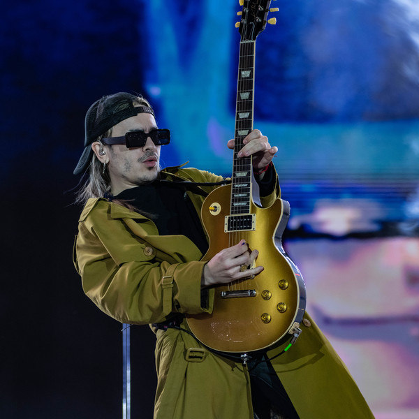
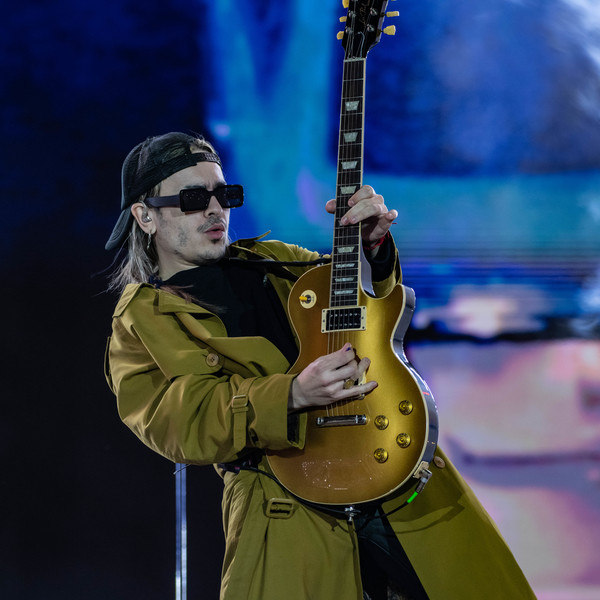

Patricio Sardelli
Historia
Patricio Sardelli, nacido en Buenos Aires, Argentina, es el vocalista principal y guitarrista de la banda Airbag. Junto a sus hermanos Guido y Gastón, formó la banda en 1999, convirtiéndose en una de las bandas más influyentes del rock argentino.
 

Su estilo único de guitarra y su voz distintiva han sido fundamentales en el sonido característico de Airbag, fusionando el rock clásico con elementos modernos.